简介
以本站为例, 介绍免费快速搭建个人网站:
注意事项:1.Freenom对国内用户不太友好, 需要国外IP才能正常访问.
2.GitHub为纯英文网, 网速有一定限制.
3.Gitee为中文网页, 但绑定个人域名需要付费.
相关链接
域名注册
Freenom提供tk、ml、ga、cf、gq为后缀的免费域名. 打开Freenom网站, 输入想要的域名名称, 检查可用性.
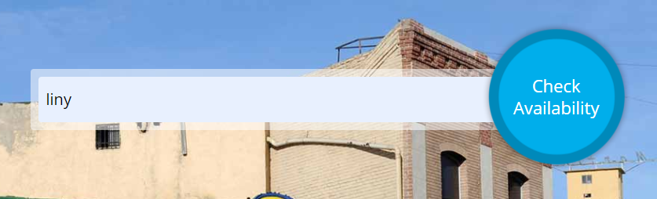选择可用的域名后缀, 加入购物车, 并点击右上角结算.
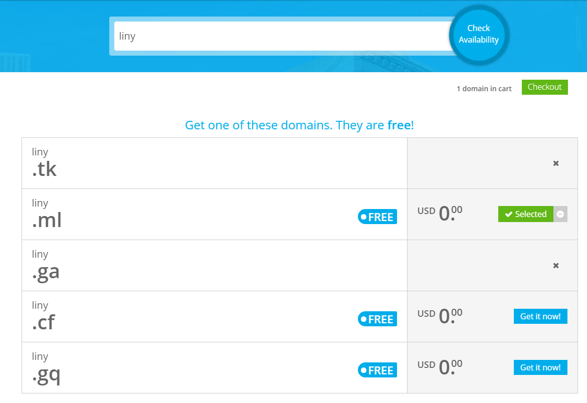选择要购买的时长, 默认为3个月, 最多可购买12个月, 一次性超过12个月需要额外费用.
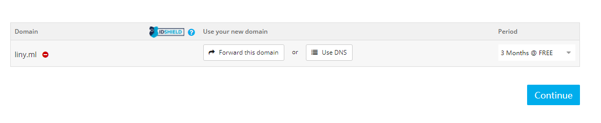确认订单
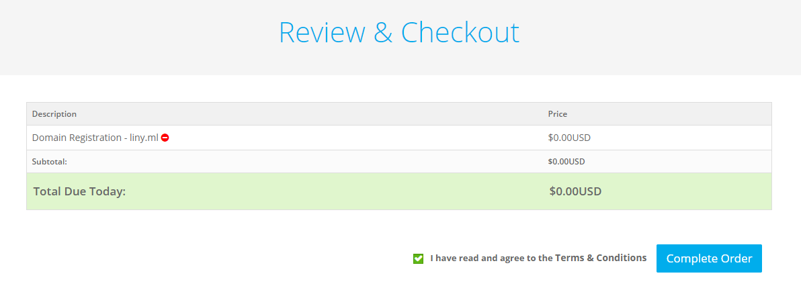完成订单
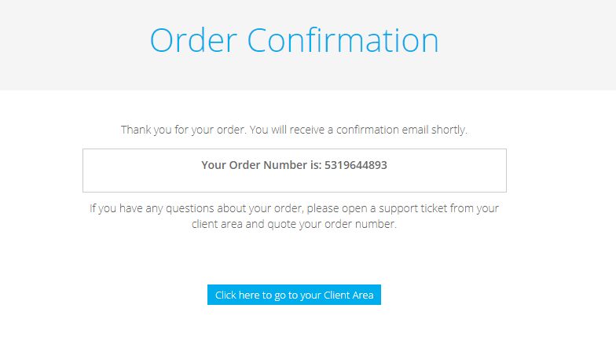DNS解析
点击服务->我的域
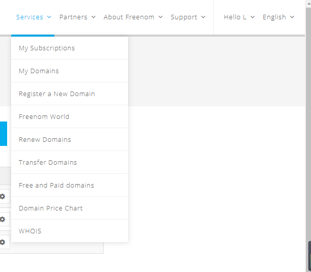管理域->名称服务器
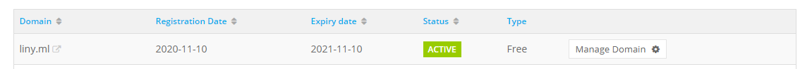管理工具
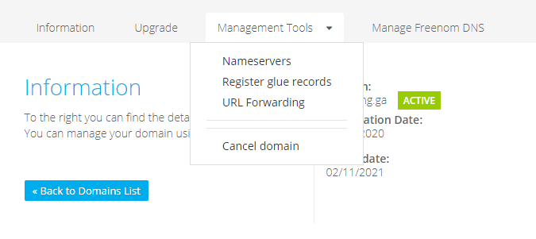使用自定义名称服务器, 输入f1g1ns1.dnspod.net和f1g1ns2.dnspod.net.
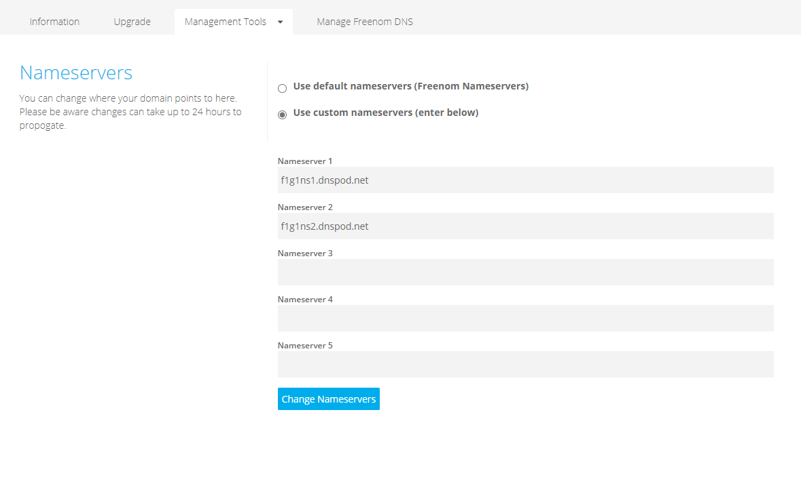打开NDSPod, 点击DNS, 进入控制台
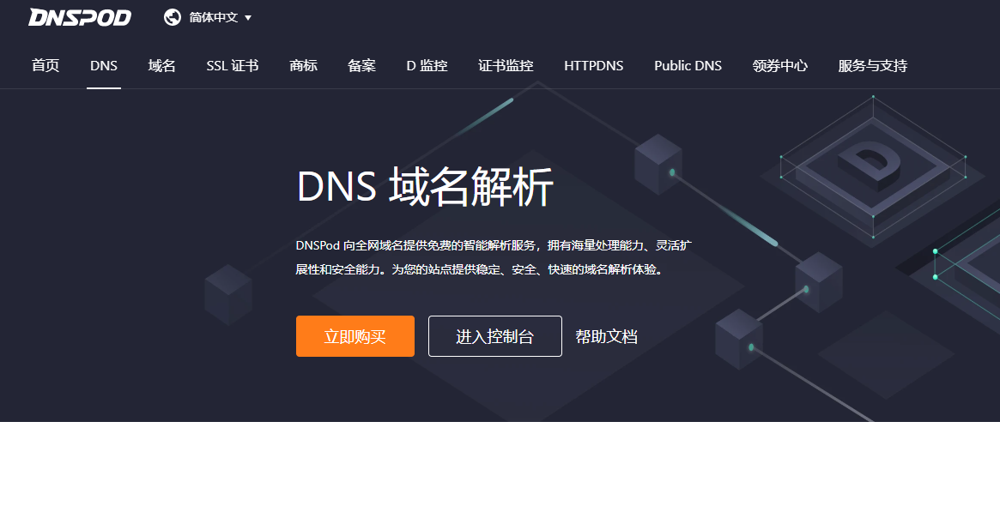添加域名, 输入刚才申请的域名.
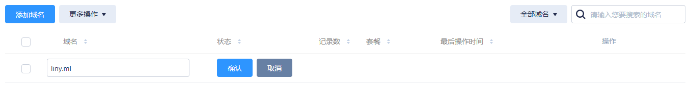若显示域名状态异常, 点击刷新即可.
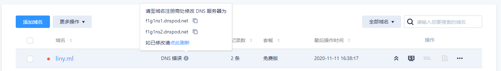代码托管
注册GitHub, 创建仓库, 创建index.html文件
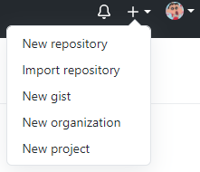库名要求为: 用户名.github.io, 然后直接点下方创建仓库.
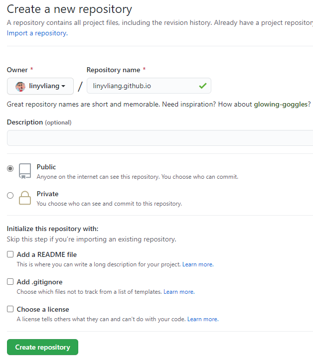下载github桌面版,打开登陆, 点击右上角文件->克隆仓库.
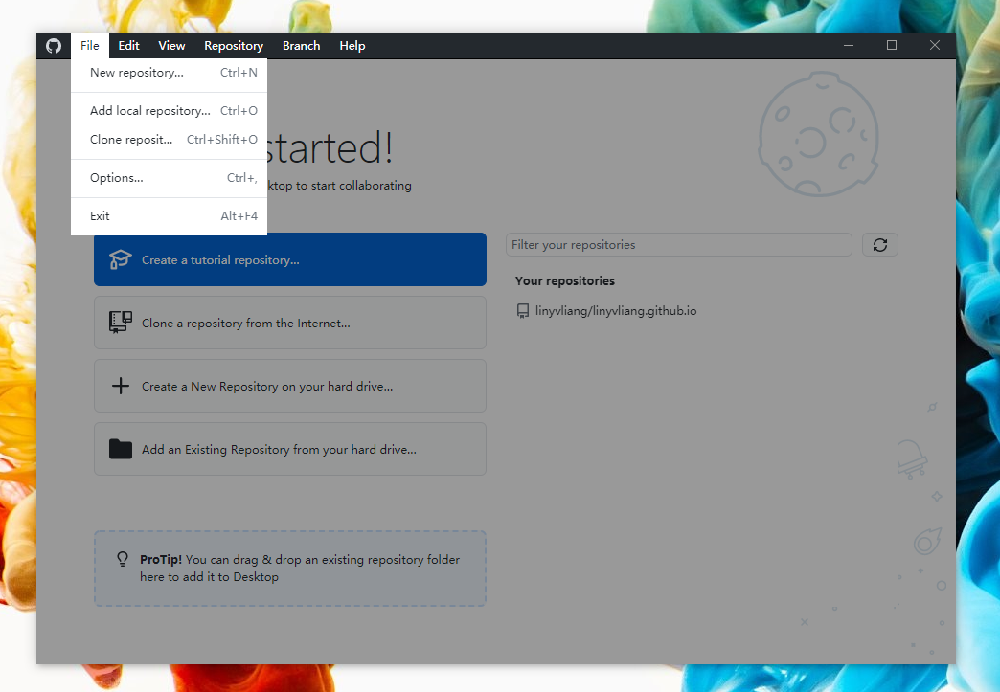找到刚才创建的仓库, 然后选择要克隆的本地路径.
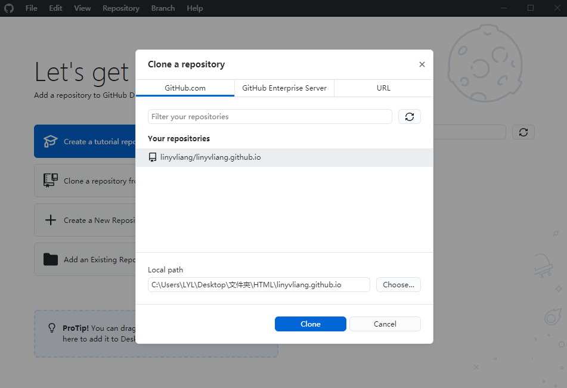打开保存的目录, 将网站的相关文件放入
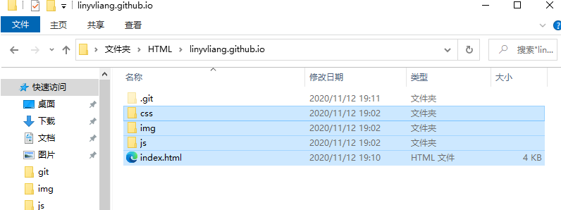回到客户端, 客户端已经自动获取到了文件夹的修改情况.

最后,push上去就好了.
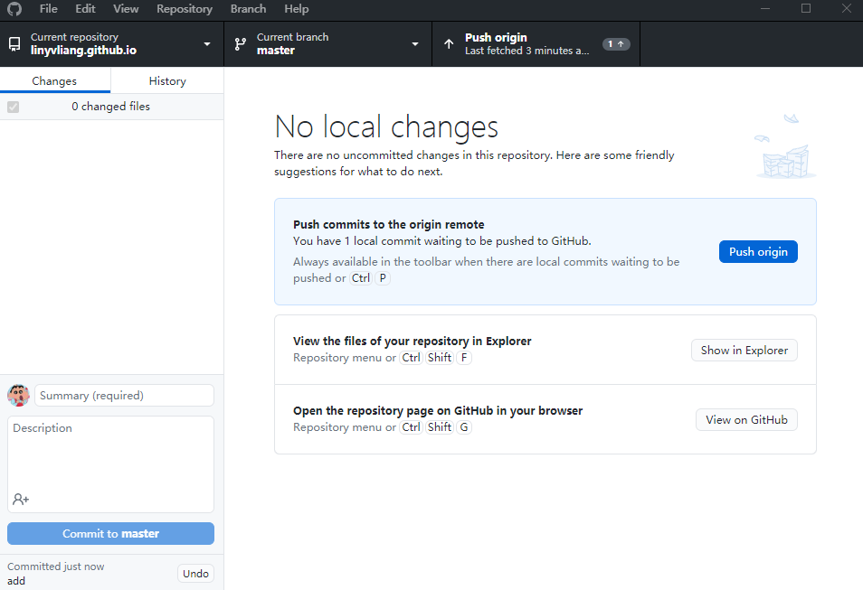这时候, 访问 用户名.github.io 就可以查看你的网站了.
创建CNAME文件, 文件内填上你的域名地址. 回到客户端push上去就好了.